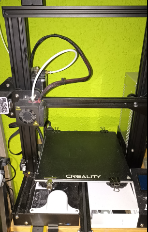
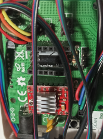

IMPRESORAS 3D

Este mundillo de la impresión 3d, es relativamente nuevo para mí. Aun así, quiero compartir todo
aquello que me ha enseñado, gente tan maravillosa y desinteresada como Juan Gonzalez Gomez. Me ha
enseñado lo que es el software libre y hardware libre. Por lo que también me animo a partecipar Y
enseñar lo que he aprendido.
Para saber más pincha aquí.
PROYECTOS DE ELECTRÓNICA

Bueno, en esto llevo más tiempo, comence con la valvulas, ¡ qué tiempos!, es broma, jejeje.
no soy tan viejo, aunque si que me he dado cuenta que tengo la suficiente edad, como para
fijarme por donde piso. En fin, espero poder enseñar o mostrar algo de interes.
Para saber más pincha aquí.